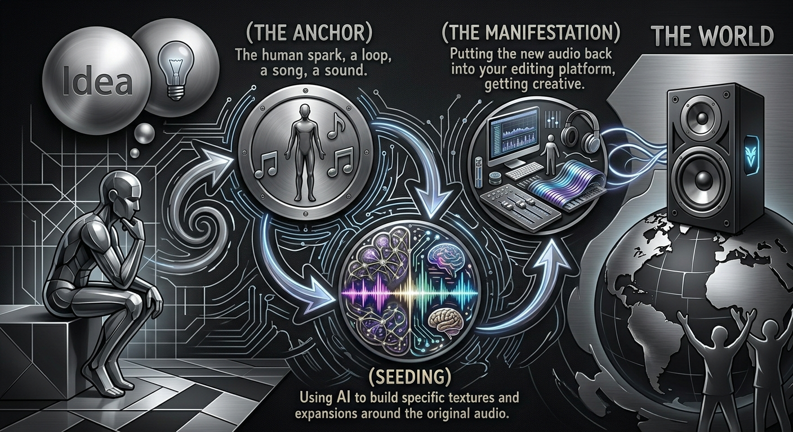

What is Hybrid Production?
Definition
“Hybrid Production isn't about choosing between human and machine—it’s about the handshake between them. It’s using AI to sprout the initial 'seeds' of an idea, then taking the wheel with live synths, real instruments, and human intuition to turn those sparks into a finished track.”
Why Hybrid is Superior
Limitless Palette
AI gives me colors and sonic textures I didn't know existed.
Speed to Inspiration
It kills "writer's block" instantly, generating raw material to mold.
Human Control
At the end of the day, I'm the one who decides what stays and what goes. The "Logic" is mine; the "Chaos" is the AI's.
Part One: Seeding (The Prompt)
The Biological Blueprint: Taxonomic Rank
In the 18th century, Swedish botanist Carl Linnaeus formalized the system of Taxonomic Rank. Its primary value in biology is the standardized classification and naming of organisms. By grouping life into a rigid hierarchy from the broad Kingdom down to the specific Species, scientists can identify relationships, predict behaviors, and ensure that every specimen has a unique and universally recognized place in the natural world.
Application: Sonic DNA
In Hybrid Production, this identical logic must be applied to the initial AI prompt. The latent space of a generative AI model is a chaotic wilderness of unstructured audio data. Without a hierarchical framework, prompting is merely pulling the lever of a slot machine. This results in a sonic mutation with no clear lineage.
By utilizing Taxonomic Ranks in the style generation, a process defined here as "Seeding," the producer injects a deliberate sequence of Sonic DNA. You are not asking the machine for a generic output. You are defining the exact biological structure of a new musical organism before it is rendered.
The Hybrid Taxonomy Chart
| Taxonomic Rank | Musical Equivalent | Purpose and Implementation |
|---|---|---|
| Kingdom | Domain | The broadest category of sound (e.g., Electronic, Acoustic, Orchestral). |
| Phylum | Core Genre | The fundamental body plan (e.g., Industrial, Ambient, Synthwave). |
| Class | Atmosphere | The environmental climate (e.g., Dark, Ethereal, Tense, Cinematic). |
| Order | Pulse and Rhythm | The structural heart rate (e.g., 95 BPM, Half-time, Syncopated). |
| Family | Instrumentation | The anatomy of the track (e.g., Analog Bass, Granular Synths, 808s). |
| Genus | The Vibe Twist | The identifying mutation (e.g., Glitch-heavy, Bit-crushed, Lo-fi). |
| Species | The Final State | The specific surface texture (e.g., Gritty, Polished, Raw). |
Ground Evidence: The Case for Creative Control
Structuring a seed prompt through strict taxonomy is not merely a creative exercise. It is a verifiable mechanism of human authorship. Generative AI models are fundamentally classification engines. When a producer inputs a structured taxonomic string, they override the default probabilistic tendencies of the AI. The machine is no longer guessing what sounds good together. It is executing a highly specific set of parameters dictated entirely by human intent.
This established workflow provides critical data provenance. It serves as ground evidence that the resulting audio file is the direct product of human architecture. In an industry grappling with the definition of authorship, a taxonomic seed proves that the producer maintained absolute creative control over the genetic makeup of the work, reducing the generative AI to its proper role as a rendering engine for human imagination.
Part Two: Spectral Splitting (The Tri-Band Dissection)
The Limitation of Flat Audio
Generative audio models inherently output a single, flattened stereo file. In traditional audio engineering, a producer has access to individual stems, allowing for precise spatial and dynamic control over every instrument. A flat AI render traps all frequencies in a single layer. This often results in a compressed, muddy, or mathematically rigid sound.
The Spectral Splitting Methodology
Spectral Splitting is the process of dissecting this flattened audio into manageable, independent frequency bands. By duplicating the raw audio across multiple tracks and utilizing surgical equalization, the producer shatters the locked file. This workflow bypasses the limitations of the AI output, granting the creator granular control over the sonic anatomy through targeted plugin chains.
The Architecture of the Split (DAW Setup)
To execute this method correctly, the routing in the Digital Audio Workstation must follow a strict architectural hierarchy. The producer is essentially building a custom crossover network.
1. The Reconstruction Bus and the Three Branches
Before applying any plugins, the producer must establish the routing framework. First, create a single unifying Bus track. This is often labeled the Hybrid Master or Split Bus. Next, create three duplicate audio tracks of the raw AI generation.
These three tracks will serve as the High, Mid, and Low branches. All three branches must be routed directly into the Reconstruction Bus, ensuring they are processed as a single, cohesive unit before hitting the master output.
2. The Isolation EQ (First Position)
The absolute first insert on each of the three branching tracks must be an equalizer. Using steep high-pass and low-pass filters, the producer carves out the designated frequency range for that specific channel.
- The Low Band: Approximately 20Hz to 200Hz.
- The Mid Band: Approximately 200Hz to 4kHz.
- The High Band: Approximately 4kHz to 20kHz.
During this phase, the workflow requires isolating the active band by muting the others to allow for surgical precision. The producer must frequently unmute the full stack to check the combined mix, ensuring the crossover points remain phase-aligned and transparent.
3. The Mono Anchor (The Low Band)
The isolated Low band is the structural Anchor of the track and must always be collapsed into pure mono. Low frequencies carry the physical, kinetic energy of a composition. Because human hearing cannot easily localize sub-bass frequencies, leaving them in wide stereo introduces severe phase cancellation.
When a stereo bass signal is summed to mono on club PA systems or mobile devices, the opposing left and right frequencies cancel each other out, leaving a hollow mix. Forcing the Low Anchor into mono ensures maximum kinetic impact and absolute structural integrity.
4. The Refinement Chain (Artist Intent)
Once the frequencies are isolated and the Anchor is set, the producer applies a dedicated signal chain to each branch.
Low Anchor Processing
The goal is tightening the foundation. Common tools include iZotope Low End Focus for punch, or analog-modeled EQs like the Universal Audio EQP-1A to boost fundamental sub-harmonics without introducing mid-range mud.
Mid Band Processing
This branch houses the core identity of the track, including vocals and lead synths. Dynamic control and resonance suppression are vital here to tame the harsh peaks and artifacts inherent in generative audio. Industry-standard tools like FabFilter Pro-MB provide surgical multiband compression, while Oeksound Soothe2 is highly recommended for dynamically smoothing out the harsh, metallic resonances often found in AI-generated mid-ranges.
High Band Processing
This is the realm of spatial width and high-frequency breath. Harmonic exciters or stereo imagers are applied to push the high frequencies out wide, enveloping the listener while keeping the mono Anchor firmly centered. Utilizing the famous Air Band on the Maag Audio EQ4 can bring synthetic highs to life, while spatial tools like Soundtoys MicroShift or the iZotope Ozone Imager effectively widen the stereo field without causing phase correlation issues.
5. The Final Limiter
Because the three branches are routed back together into the Reconstruction Bus, a final stage of control is required. A glue compressor and a true-peak limiter must be placed at the end of the Bus signal chain. This catches and suppresses any rogue dynamic peaks created where the frequency bands intersect, delivering a polished, professional foundation ready for the next phase of production.
Part Three: The Round Trip (Feedback Loop)
The real magic of Hybrid Production doesn't happen when you just generate audio. It happens in the continuous feedback loop between human intent and machine complexity. Lets refer tot his as the "Round Trip".
This three-step cycle makes sure the AI serves the composition instead of the other way around. It is a deliberate workflow designed to cut out the randomness and give you a final product with real intent.
Node A: The Anchor (Human Source DNA)
Every Hybrid track starts in the physical world. Instead of typing a blank text prompt, the whole process kicks off with a human anchor. This could be a custom sample, a recorded vocal, or an original instrumental progression (even a previous entire song!). We inject this seed right into the workflow so the AI has a strict rhythmic and harmonic DNA to follow. By setting this anchor first, you lock in the original soul of the track.
Node B: Neural Seeding & Refinement
Once the anchor is locked in, we feed it into the AI's latent space for seeding. This is where the actual heavy lifting of prompting and refining takes place.
- I use the anchor to guide the AI to build specific textures and expansions around the original audio.
- We refine and re-roll the generation continuously until the output perfectly matches the creative vision.
- Once we hit that ideal variation, I export the new audio file and pull it directly back into the local DAW(Logic, Ableton, FL Studio, Etc.).
Node C: The Manifestation (Surgical Refinement)
This step is where the producer takes total control back. The audio exported from the AI is treated like just another raw track on the mixing desk. To reach the final manifestation, we use a few key techniques:
- Spectral Splitting: Surgically carving out frequencies to separate the complex AI textures from the core stems.
- Human Instrumentation: Overdubbing live synthesizers, adding vocals, or chopping manual drum breaks to bring the groove back down to earth. (This is where you get creative)
- Mixing & Mastering: Applying traditional audio engineering techniques to glue the human and digital elements together.

The Result
What you get is a continuous feedback loop. Human emotion informs the machine intelligence, and the machine's complexity inspires the human mix. The Round Trip guarantees that the final output is never just a random hallucination. It becomes a highly controlled and deeply intentional piece of art.